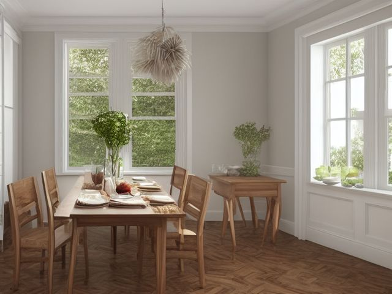

Dining Room micro zone
The Dining Table
Seat everyone for a shared meal without having to move anything first.
One session: 30-45 min. most of it in Sort, deciding where the homework and the unopened mail actually live

What done looks like
One centerpiece on bare wood and nothing else, every chair pushed all the way in with nothing hanging off its back, placemats and trivets in the sideboard drawer one step away, and no paper anywhere on the surface.
Check these before you start
- Burn or fireCandles set at the ends of a table runner catch the runner before anyone sitting at the table notices, and a hot serving dish on bare wood scorches it and can crack a glass top.
- Fall, cut, or crushA drop leaf or an extension table with a worn latch can fold on a hand when someone leans on it, and dining chairs work loose at the rungs long before they actually break.
The six passes, in order
Work them in this order. Sorting after you have arranged things means arranging things you were about to remove.
Sort
Decide what stays. Everything else leaves the zone now.
Clear the whole table onto the floor in one armful, then sort what came off by owner rather than by type. The homework, the unopened mail, and the half-finished craft project each go back to a person, not back to the table.
Straighten
Give what stays a home, placed where the hand actually reaches.
Placemats, trivets, and the napkin basket belong in the nearest sideboard drawer, one step from where you set the table. Anything you find yourself carrying in from the kitchen twice a day is sleeping in the wrong drawer.
Shine
Clean it, and use the cleaning to inspect what you cannot see when it is full.
Run a fingernail down the leaf seam and the joint where the top meets the pedestal, because that is where crumbs collect and stay. Wipe the chair rungs and the underside lip of the table where hands grip it to pull a chair in.
Safety
Make the zone safe for everybody who uses it, including the shortest person.
Lift and rock each chair to find a loose rung or a joint that has started working, and turn any chair that moves to face the wall so nobody sits on it before the joint is glued. Keep a trivet in the table's own drawer so a hot dish never lands on bare wood, and keep tall candles well clear of the runner ends.
Standardize
Write down the best way you know today, so it survives you forgetting.
The centerpiece is the table's only permanent resident and its footprint is the boundary. Photograph the table both set and cleared, and tape both pictures inside the sideboard door so the right state is not something anyone has to remember.
Sustain
Attach the reset to something that already happens, so it keeps itself.
When the plates go to the sink after dinner, the homework, the mail, and the craft box ride along in the same trip. Nothing waits for a second journey.
The person who works at the table
Someone in the house has made the table their desk, and every reset you have run so far has been a polite request that they stop. Requests do not hold. Here is the rule that settles it: if an activity lands on the table more than three evenings in a week, it is not clutter, it is an activity with nowhere else to be, and no table standard will survive it. Give that activity a caddy it lives in and a named shelf it goes back to, or accept that this is a desk and stop calling the room a dining room. Then decide which meal you are protecting, Sunday lunch or weeknight dinner, say it out loud to the household, and let everything outside that meal be negotiable.
Cleaning it properly
Clean the table to read it. Crumbs and spills hide in the seams and joints, so work the whole piece top to bottom and back to front, not just the open top where the plates sat.
Inspect as you clean. Cleaning is the only time you see the zone empty, so use it.
- Lifting veneer or a bubbling finish along the leaf seam tells you water has crept under the surface. Flag it.
- A white heat ring or a scorch bloom appearing as you wipe is the mark of a hot dish set straight on the wood. Flag where it sits.
- A screw backing out of the apron, or a top fixing you can rock with a fingertip, means the frame is working loose. Flag it.
- On an extension table, a leaf latch that no longer sits flush or a slide that binds is worth flagging while the leaf is open.
The standard that keeps it fixed
Bare wood plus one centerpiece between meals, and every visiting activity arrives in its own container and leaves with it.
Reset trigger. When the plates go to the sink after dinner, everything else on the table travels with them.
Next in this room
- The Sideboard Surface, the zone after this one
- All 5 micro zones in the Dining Room
Related reading
- What is 6S?
- This zone's safety pass, in full
- Is one spot in this zone always the one you skip?
- Why this zone gets messy again
- Decluttering vs. organizing
- Before you buy storage for this zone
- Still does not fit, even after the honest count?
- Does something in this zone actually get used somewhere else?
- Stuck on one item in this zone?
- Written the standard, but nobody else follows it?
- Does everyone in the house agree what "done" looks like here?
- Does more than one person use this zone?
- Found a duplicate of something in this zone?
- Why the standard above names one home per category
- Is the everyday item in this zone actually the easy one to reach?
- Not sure whether to keep something in this zone?
- Does this zone keep running out of something?
- Started this zone and stalled partway through?
When you want it off the screen
Carry The Dining Table into the room
The method above is complete and free. The Whole House Print Pack puts The Dining Table and the other 113 micro zones on 684 printable cards, so the steps you just read are not stuck behind a phone screen while your hands are full.
The Print Pack, 19 dollarsJust this zone, 4 dollarsOr draw a card free
The Dining Table on its own is 4 dollars for 6 cards. All 114 micro zones is 19 dollars for 684. The whole house is the better buy; the single zone is here so you can take only what you are working on.
If The Dining Table keeps fighting back, the real problem usually sits somewhere else in the room. A one hour virtual consult is 250 dollars: we find the function, the friction and the root cause together, and you keep a written standard for the space. See what a consult covers.